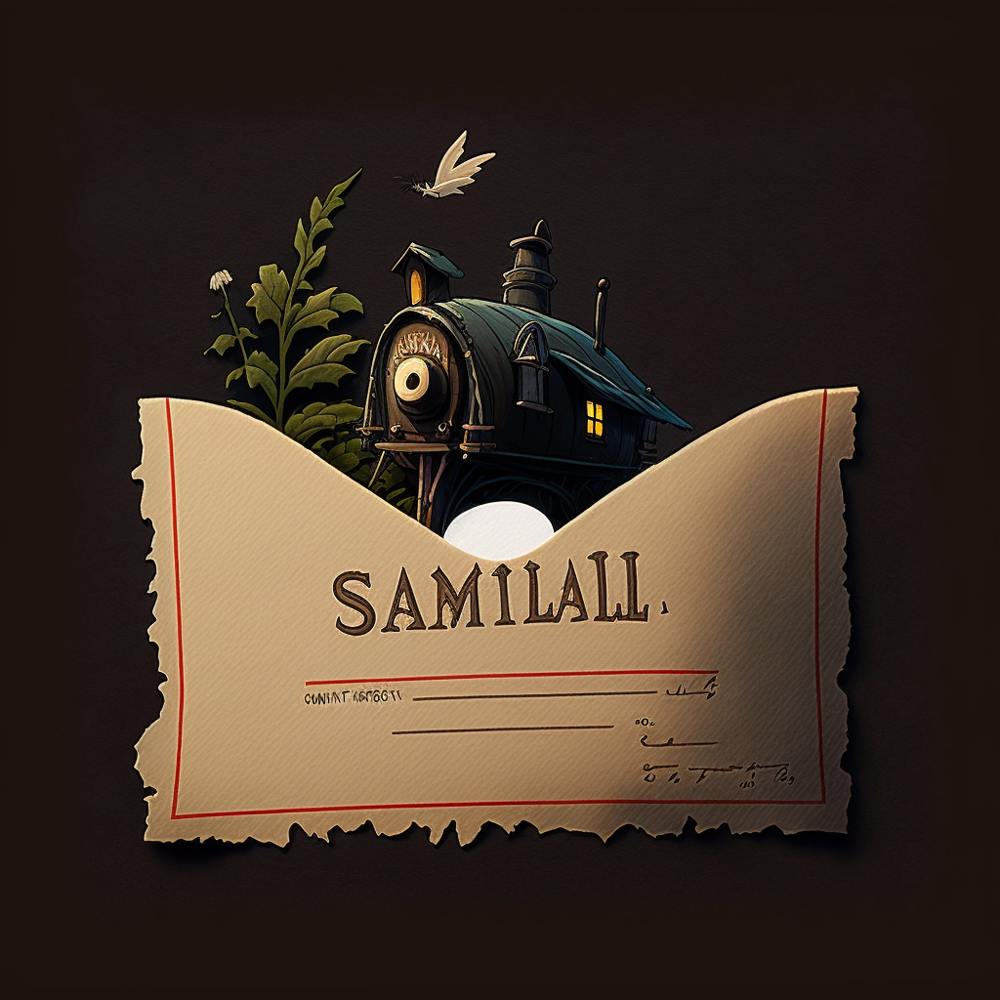

With a unique blend of technical expertise, seamless communication, and exceptional template documentation
skills, I excel as an email developer and collaborative team player, delivering outstanding results for
my clients.
My extensive experience in creating responsive emails with dynamic content based on API datasets, combined
with my expertise in using email testing platforms such as Litmus to troubleshoot issues, makes me a highly
valuable asset to any email marketing team.
Additionally, my ability to manage up to four projects simultaneously while working in fast-paced environments
demonstrates my adaptability and proficiency in meeting deadlines and achieving results.
Google StoreNest RenewTciCasa Del SolStarbucks |
Web Developer
Hi, my name is Matthew Sampson and I'm an experienced web developer with a history of proven email development skills.
Google StoreWeb Developer I/IIGolden Company was responsible for designing and managing email campaign
templates using Handlebars.js, Freemarker, and JSON/YAML files, and configuring global partials to generate
personalized email content using Google user API data.
Nest RenewWeb Developer II
I worked at Starbucks for five and a half years, and during that time, I experienced firsthand the importance of exceptional
customer service. As a barista, I learned how to effectively connect and communicate with customers, making every cup of coffee
more than just a transaction. It was an opportunity to engage in meaningful conversation and provide personalized care.
TciIntern Developer
As a budding intern I primarily worked on TCI's primary web presence -- specifically the cirriculum pages.
Casa Del SolLead Creative Designer / Web Developer
I worked as the lead creative designer and web developer for the redesign of the Casa Del Sol website. Using JavaScript,
CSS/LESS, and Bootstrap, I implemented mobile responsive functionality and conducted quality assurance tests across
various mobile devices and browser platforms to ensure a consistent user experience. Additionally, I facilitated weekly
meetings to discuss feature requests, creative designs, and client feedback.
StarbucksBarista
Working at Starbucks was a transformative experience that changed my life forever. As an introverted individual who struggled
with basic social skills, I often envied those who had a natural ability to shine in social settings. However, my desire for
change drove me to apply for a job at my local Starbucks. Over the next five and a half years, I underwent a remarkable
transformation, becoming the person I always aspired to be.
|
Check out our recent JSFiddle and GitHub projects!
|

@JSFiddle Samilall A heartfelt message conveying warm wishes and the sender's longing for the tranquil sea atmosphere. JSFiddle ↦ |
@JSFiddle Midnight Words of admiration for the picturesque mountain village and its residents, as well as their fond memories of past visits. JSFiddle ↦ |
|
@JSFiddle Midnight Words of admiration for the picturesque mountain village and its residents, as well as their fond memories of past visits. GitHub ↦ |
@GitHub Royalty A nostalgic message to an old friend, filled with memories of past adventures and updates on recent life events. JSFiddle ↦ |